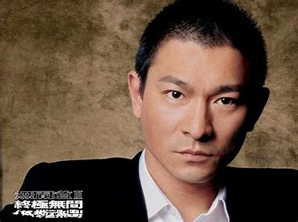
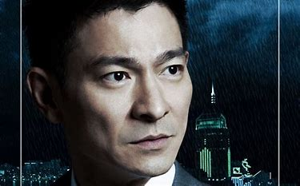
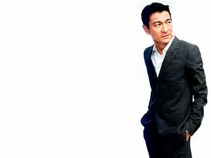
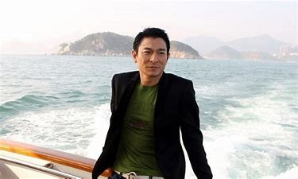

刘德华
个人简介
刘德华（Andy
Lau）,1961年9月27日出生于中国香港，籍贯广东新会,中国香港男演员、歌手、作词人、制片人。
早年经历
刘德华出生于香港新界，在家中排行老四，幼时随家人搬到了九龙钻石山的木屋区居住，并和姐弟
一起帮助家里打理卖稀饭的生意。1973年，刘德华随家人搬入香港蓝田邨第15座14楼。刘德华从黄大仙天主
教小学毕业后升读可立中学。在可立中学读书期间，刘德华积极参加校内学校剧社的表演，在老师杜国威的指
导下学习戏剧方面的知识。此外，他还参与包括编剧在内的幕后制作。刘德华在中五会考获得1B3D2E（中文读本A）
的成绩。中六上学期后，他到香港电视广播有限公司的艺员训练班受训，从而开始了演艺之路。
演艺经历
港剧时代
- 1981年，刘德华考进第10期无线电视艺员训练班。
- 1981年，出演个人首部电视剧《江湖再见》。
- 1982年，刘德华以甲级成绩从艺员训练班毕业后正式签约TVB。
- 1982年，在喜剧《花艇小英雄》中饰演败家仔钱日添。
- 1983年，主演金庸武侠剧《神雕侠侣》。
- 1984年，与赵雅芝合作主演古装武侠剧《魔域桃源》。
- 1984年，与梁朝伟共同主演金庸武侠剧《鹿鼎记》。
- 1985年，在古装武侠剧《杨家将》中饰演骁勇善战的杨六郎；
- 1986年，主演古装剧《真命天子》。
-
1988年，在出演了武侠剧《天狼劫》后，刘德华将演艺事业的重心转向影坛。
电影时代
-
1981年，刘德华出演电影处女作《彩云曲》，在片中扮演一个音乐班的学员。
- 1982年，在剧情片《投奔怒海》中饰演美军翻译官祖名。
-
1983年，与张曼玉搭档主演剧情片《家在香港》，在片中饰演急功近利的青年人亚伦。
-
1983年，主演动作片《毁灭号地车》，在片中与一个越南少女演绎了一段爱情故事。
- 1984年，在爱情片《停不了的爱》中饰演富家公子Eric。
-
1985年，在与叶德娴共同主演的剧情片《法外情》中饰演少年得志的青年律师刘志鹏。
-
1986年，主演科幻冒险片《魔翡翠》，在片中饰演冒险专家猎鹰一号，这也是他首度出演科幻题材的电影。
-
1986年，出演喜剧片《最佳福星》，在片中饰演身手矫健的特警组警员蓝保.
-
1987年，主演警匪片《肝胆相照》，在片中饰演亦正亦邪的犯罪集团成员阿定。
-
1988年，主演王家卫执导的黑帮片《旺角卡门》，在片中饰演重情重义的江湖混混华仔。
- 1988年，主演警匪片《猎鹰计划》，在片中饰演具有正义感的警员国华。
- 1989年，在动作片《至尊无上》中饰演有“亚洲第一快手”之称的陈亚蟹。
-
1989年，主演剧情片《神行太保》，在片中饰演一名公正、能干、勇敢的太保。
-
1990年，主演爱情片《天若有情之追梦人》，在片中饰演善良热情、讲义气的黑社会混混华Dee。
- 1990年，主演剧情片《至尊计状元才》。
-
1990年12月，与周星驰合作主演赌片《赌侠》，在片中饰演身怀绝技的陈刀仔。
-
1991年，刘德华开始改变银幕形象，主演了传记题材的系列电影《五亿探长雷洛传》。
- 1991年6月，主演犯罪题材的电影《至尊无上Ⅱ之永霸天下》。
- 1992年8月，与王祖贤、叶德娴合作出演剧情片《庙街十二少》；
-
1992年11月，与林青霞、叶德娴共同主演古装片《绝代双骄》，在片中饰演聪明绝顶的小鱼儿。
-
1992年，主演爱情片《九二神雕侠侣之痴心情长剑》，在片中饰演痴情大侠情仁。
- 1993年，在古装片《战神传说》中扮演一个武功超群的渔民 ；
-
1993年，主演动作喜剧片《至尊三十六计之偷天换日》，在片中饰演赌术高明的千门高手钱文迪。
-
1994年，刘德华投资并主演了剧情片《天与地》，在片中饰演面对恶势力却毫不退缩的禁毒专员张一鹏。
- 1995年，主演赛车励志片《烈火战车》，在片中饰演叛逆、倔强的阿祖。
-
1995年，在动作片《大冒险家》中演绎了立仁从小时候父母双亡到长大后进入泰国空军的故事。
-
1996年，主演黑帮题材的电影《新上海滩》，在片中饰演对冯程程痴情一片的丁力。
- 1997年，担任剧情片《香港制造》的制作人。
-
1997年，主演爱情片《天若有情之烽火佳人》，在片中饰演家世显赫的空军少尉刘天伟。
-
1997年12月，与梁家辉联袂主演警匪动作片《黑金》，在片中饰演精明干练、嫉恶如仇的调查局机动组组长方国辉。
- 1998年，主演动作片《龙在江湖》，饰演重义气的黑帮成员韦吉祥。
- 1998年，出演喜剧片《赌侠1999》。
-
1999年1月，出演喜剧片《赌侠大战拉斯维加斯》；9月，刘德华与刘青云共同主演警匪片《暗战》。
-
1999年10月，在黑帮片《龙在边缘》中饰演决心改邪归正的洪兴帮大哥飞龙。
-
1999年，主演爱情片《黑马王子》，在片中饰演出身贫寒、不拘小节的阿华。
- 2000年，在动作片《阿虎》中饰演性感开朗、直爽的自由搏击拳手阿虎。
-
2001年8月3日，刘德华与日本演员反町隆史共同主演的动作片《全职杀手》上映。
-
2002年，刘德华开始拓宽戏路，在与梁朝伟共同主演的警匪片《无间道》中饰混饰演个性复杂的反派人物刘建明。
-
2002年3月28日，刘德华主演的科学幻想片《卫斯理之蓝血人》上映，他在片中饰演功夫出色的冒险家卫斯理。
-
2003年2月1日，刘德华主演的爱情喜剧片《老鼠爱上猫》上映，他在片中饰演风流倜傥、热爱自由的大侠展昭。
-
2003年3月，主演剧情片《大块头有大智慧》，在片中饰演表面放荡不羁，但内心善良的武僧大块头。
-
2003年12月，与梁朝伟共同主演强调正邪对峙、角色互换的警匪片《无间道Ⅲ终极无间》，在片中饰演被派到警队当内鬼的警员刘建明。
-
2004年1月，凭借剧情片《大块头有大智慧》获得第10届香港电影评论学会大奖最
-
2004年4月，主演由冯小刚执导的剧情片《天下无贼》，在片中突破固有的银幕形象，饰演痞子气十足的盗贼王薄。
-
2004年7月16日，刘德华与金城武、章子怡共同主演的武侠片《十面埋伏》在中国内地上映。
-
2005年，担任爱情片《再说一次我爱你》的制片人以及男主角，并在片中一人分饰两角。
- 2005年9月29日，刘德华主演的奇幻剧情片《童梦奇缘》上映
- 2005年，担任华语电影传媒大奖中国电影百年形象大使。
-
2006年，主演古装动作片《墨攻》，在片中饰演用各种计策出奇制胜的革离。
-
2007年，与李连杰、金城武共同主演古装动作片《投名状》，在片中塑造了赵二虎率性而为的草莽英雄形象。
- 2007年2月13日，在剧情片《门徒》中饰演为人低调的毒贩林昆。
-
2008年，主演古装动作片《三国志之见龙卸甲》，在片中饰演智勇双全的常山赵子龙。
-
2009年1月20日，刘德华与舒淇联袂主演的爱情片《游龙戏凤》在中国内地上映；片中他首度扮演钻石王老五的角色。
- 2009年，参演战争片《建国大业》。
-
2010年，刘德华主演了由徐克执导的古装片《狄仁杰之通天帝国》，他在片中塑造了一个文武双全的大唐神探形象。
-
2010年3月30日，刘德华与范冰冰合作主演的科幻警匪片《未来警察》在中国内地上映。
- 2011年2月3日，刘德华与巩俐主演的都市爱情片《我知女人心》上映。
- 2011年，在动作片《新少林寺》中饰演骁勇善战的军阀少帅侯杰。
-
2011年，与叶德娴搭档主演文艺片《桃姐》，在片中饰演生长于大家庭的少爷罗杰。
- 2013年1月16日，担任第7届亚洲电影大奖评审团主席。
- 2013年6月9日，主演的3D特工电影《天机·富春山居图》在中国内地上映。
-
2013年，主演3D警匪动作片《风暴》，在片中饰演身陷不白之冤的国际特工肖锦汉。
-
2014年5月，主演中国首部打拐题材的电影《失孤》，在片中饰演倔强善良的农民雷泽宽。
-
2015年9月30日，刘德华主演的警匪片《解救吾先生》上映，他在片中饰演冷静、机智的电影明星吾先生。
- 2015年，与周润发、张学友共同主演动作喜剧片《澳门风云3》。
-
2016年4月1日，刘德华参演的动作片《我的特工爷爷》上映，他在片中饰演嗜赌成性且脾气暴躁的小混混李政久。
- 2016年，参演魔幻类型的3D动作片《长城》。
-
2016年10月1日，刘德华主演的喜剧动作片《王牌逗王牌》上映。此外还客串电影《铁道飞虎》
- 。 2017年4月28日，主演的警匪动作片《拆弹专家》在中国内地上映。
-
2017年7月，主演由冯德伦执导的动作冒险片《侠盗联盟》，在片中饰演温文尔雅的江洋大盗张丹。
-
2017年9月30日，与甄子丹共同主演的动作犯罪片《追龙》上映，刘德华在片中饰演头脑精明的“五亿探长”雷洛。
- 2018年2月，主演警匪片《拆弹专家》。
-
2018年3月，主演警匪片《拆弹专家》的续集《拆弹专家2》，此外他还以监制、主演的身份参加《扫毒2》的拍摄。
- 2019年9月12日，其友情客串的电影《花椒之味》上映。
-
2020年1月19日，取材经典神话故事的《七圣》系列电影正式宣布启动，刘德华担任监制及主演，在片中饰演孙悟空。
音乐时代
-
1985年，加入华星唱片公司；同年，发行首张个人专辑《只知道此刻爱你》，从而正式进入歌坛。
- 1987年，加入百代唱片公司；同年，发行粤语专辑《情感的禁区》。
- 1988年2月，发行第三张个人专辑《回到你身边》。
- 1990年，凭借专辑《可不可以》奠定其在歌坛的地位。
- 1990年4月，发行国语专辑《如果你是我的传说》。
-
1991年1月，发行专辑《一起走过的日子》；2月，发行粤语专辑《爱不完》；6月，发行国语专辑《我和我追逐的梦》。
-
1992年，在洛杉矶、旧金山等地举行美加巡回演唱会；9月，发行加入华纳唱片公司以后的首张专辑《真我的风采》。
-
1992年，在提前录制的央视春晚视频中，刘德华与毛阿敏、张雨生合唱歌曲《心中常驻芳华》。
- 1993年1月至2月，在香港红磡体育馆举行20场“真我的风采演唱会”。
- 1994年，发行国语专辑《忘情水》；11月25日，发行国语专辑《天意》；
- 1995年，加入艺能动音唱片公司；8月，发行国语专辑《真永远》；
-
1995年，在香港红磡体育馆举行20场演唱会“刘德华反转红馆倒转地球演唱会”。
-
1997年4月，发行国语专辑《爱如此神奇》；12月发行国语专辑《爱在刻骨铭心时》；在香港回归庆典晚会上，刘德华演唱了代表作《中国人》。
-
1998年3月，发行粤语专辑《你是我的女人》；11月，发行曲风多元的国语专辑《笨小孩》；
-
1999年5月，发行国语专辑《人间爱》。
2000年8月，发行国语专辑《男人的爱》。
- 2001年6月，发行国语唱片《天开了》；
-
2002年7月，刘德华推出的国语唱片《美丽的一天》是他加入加际娱乐后的首张专辑。
-
2003年6月，发行粤语专辑《如果有一天》，同名主打歌《如果有一天》是由刘德华个人填词的作品。
-
2005年，刘德华在央视春晚舞台上演唱歌曲《恭喜发财》；8月4日，发行国语专辑《再说一次我爱你》。
-
2006年8月，刘德华发行的粤语专辑《声音》是一张关注人性的唱片 [161]。
-
2007年7月，刘德华推出了涉及爱情、环保、人生态度等主题的国语专辑《一只牛的异想世界》。
- 2008年2月，发行演唱会专辑《Wonderful World 香港演唱会2007》。
-
2009年8月，亲自为浙江卫视中国蓝打造并演唱台歌《海阔天空一路是蓝》。
-
2010年10月，刘德华在入行30周年之际，推出了以翻唱其他歌手歌曲为主的怀旧专辑《忘不了的》。
-
2011年，发行原声带专辑《悟》。 2012年，发行精选专辑《我们的刘德华》。
- 2013年，在北京、上海等地举行“Always刘德华中国巡回演唱会”。
-
2015年2月18日，刘德华第五次参加中央电视台春节联欢晚会，并演唱歌曲《回家的路》。
-
2016年，由刘德华填词并演唱的歌曲《原谅我》正式发行，这首歌曲是动作片《我的特工爷爷》的主题曲。
- 2017年，作词并演唱歌曲《慢慢习惯》。
-
2020年2月，刘德华亲自填词创作粤语歌曲《我知道》，献给向前线抗疫、努力奋斗的每一位人员。
生活照




主要作品
社会活动
1991年，华东地区发生水灾，刘德华向灾区捐款500万。1994年，成立刘德华慈善基金会，帮助贫困儿童以及伤残人士。
1999年9月24日，参加“伸出你的手，九二一震灾捐款”晚会，通过与梅艳芳、张学友合唱歌曲《月亮代表我的心》筹得
3000万元的善款。2001年，将上海演唱会的150万元演出收入捐献给艺术节组委会；同年，内蒙古自治区遭受雪灾，
刘德华将筹得的2000件天蚕衣（约合40万元）捐给灾区。2004年，刘德华向印度洋海啸灾区捐款30万元；同年，为仁济
医院筹得善款480万元。2005年，参加由中国香港演艺界发起爱心无国界汇演，并捐款1200万。
2006年6月6日，刘德
华参加全港学童护眼大行动，并捐款10万；同年，投资2500万筹建“亚洲新星导”计划。2008年5月13日，刘德华向汶川
地震灾区捐款10万元；之后发起的抗震救灾关爱行动筹款近3900万港币，并亲自填词《承诺》作为赈灾歌曲；6月3日，
在海南三亚“爱心呵护阳光行动”中，刘德华义拍奥运火炬，并将拍得的190万元人民币全部用于四川地震灾区教育事业；
此外，他还出资75万元买下赵宇瑛捐卖的火炬。2009年台湾发生八八水灾，刘德华与众艺人共同发起募款赈灾晚会。2010
年4月，刘德华参加的“抗旱救灾-我们在行动”赈灾晚会筹募2.8亿元善款，刘德华个人捐款20万元；2010年4月，玉树发生
地震，刘德华在发布短文后参加“情系玉树-关爱行动”赈灾义演，赈灾现场为灾区筹得捐款3506万港元。2011年4月1日晚，
参加由香港演艺人协会发起的“爱心无国界311烛光晚会”筹款活动。2015年，拍摄以“春运回家”为主题的公益广告。
获奖记录
香港电影金像奖
2012第31届香港电影金像奖最佳男主角奖 《桃姐》 （获奖）
2008第27届香港电影金像奖最佳男配角奖 《门徒》（获奖）
2004第23届香港电影金像奖最佳男主角奖 《大块头有大智慧》 （获奖）
2000第19届香港电影金像奖最佳男主角奖 《暗战》 （获奖）
台湾电影金马奖
2011第48届台湾电影金马奖最佳男主角奖 《桃姐》 （获奖）
2004第41届台湾电影金马奖最佳男主角奖 《无间道Ⅲ终极无间》 （获奖）
中国电影华表奖
2016第16届中国电影华表奖优秀男演员奖 《失孤》 （获奖）
亚洲电影大奖
2012第6届亚洲电影大奖最受欢迎男演员奖《桃姐》 （获奖）
2007第1届亚洲电影大奖亚洲电影票房巨星大奖 （获奖）
人物评价
刘德华是华人娱乐圈影、视、歌多栖发展的代表之一;在电视、电影、音乐等方面都留下了为数众多的代表作。
作为演员，他是华语影坛的巨星。他致力于电影业的发展，并且贡献良多。20世纪80年代，来自草根阶层的他
吻合了香港电影亲切感的特点。之后他不断的寻求转型和突破。他在《暗战》、《无间道》等影片中的表演充
分显示了其驾驭角色的能力以及演技走向成熟的轨迹。他的表演风格具有干净、沉静的特点。他很少通过夸张
的表情和动作来表达炽烈的感情；而是选择用台词和神态来完成角色的塑造。人民网、《新快报》、《法制晚报》、
山西新闻网、《南方人物周刊》、《上海青年报》、《京华时报》综合评价）
作为歌手，他是华人演艺圈演而优则歌的代表人物。他独特而醇厚的嗓音在歌坛上独树一帜，他的歌声也被外界
称为“刘式情歌”。他凭借有着招牌式颤音的唱腔演唱了《忘情水》、《男人哭吧不是罪》等众多金曲。他的音乐
作风也贯彻其积极、健康、进取的形象，从《我和我追逐的梦》到《来生缘》，从《谢谢你的爱》到《真情难收》。
一首首刘式情歌已经成为港式情歌的代名词。国际在线、时光网、《新京报》、凤凰网、《新京报》综合评价）
刘德华集坚毅、认真、永不言败等正能量品质于一身，堪称娱乐圈艺人的典范。从入行初期的青涩小生直到成名
以后的全能艺人，他的人生轨迹反映了一代香港人脚踏实地的开拓精神。他的性格开朗热情，对待他人平等有礼，
再加上他能够为人设身处地着想，所以在演艺界的口碑与人缘都很好。他是娱乐圈公认的劳模，他的勤奋与敬业
在业界有口皆碑。然而，更难能可贵的是他的爱心和善心。从东南亚海啸到中国内地举行的赈灾活动，他总是积
极的参与其中，其形象如同一位慈善大使。（网易娱乐、《法制晚报》、凤凰网、《新快报》、《海南日报》综合评价）
人物事件
2018年12月29日消息，据香港媒体报导，刘德华在红馆举行一连20场《My Love Andy
Lau刘德华World Tour》跨年演唱会，
昨晚（12月28日）第14场，刘德华因失声而中途腰斩演唱会，刘德华激动流泪向观众道歉。